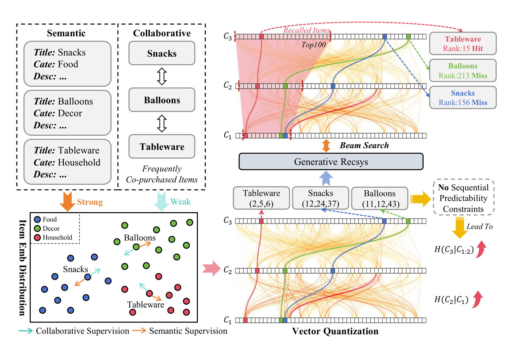
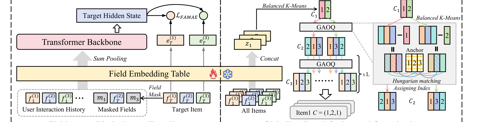
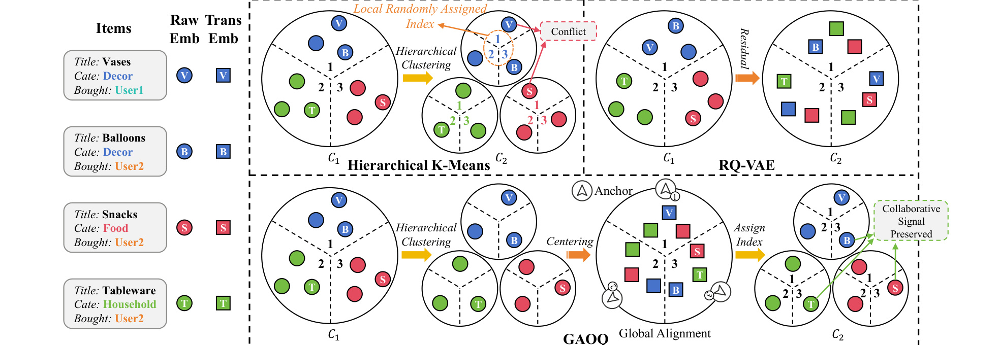
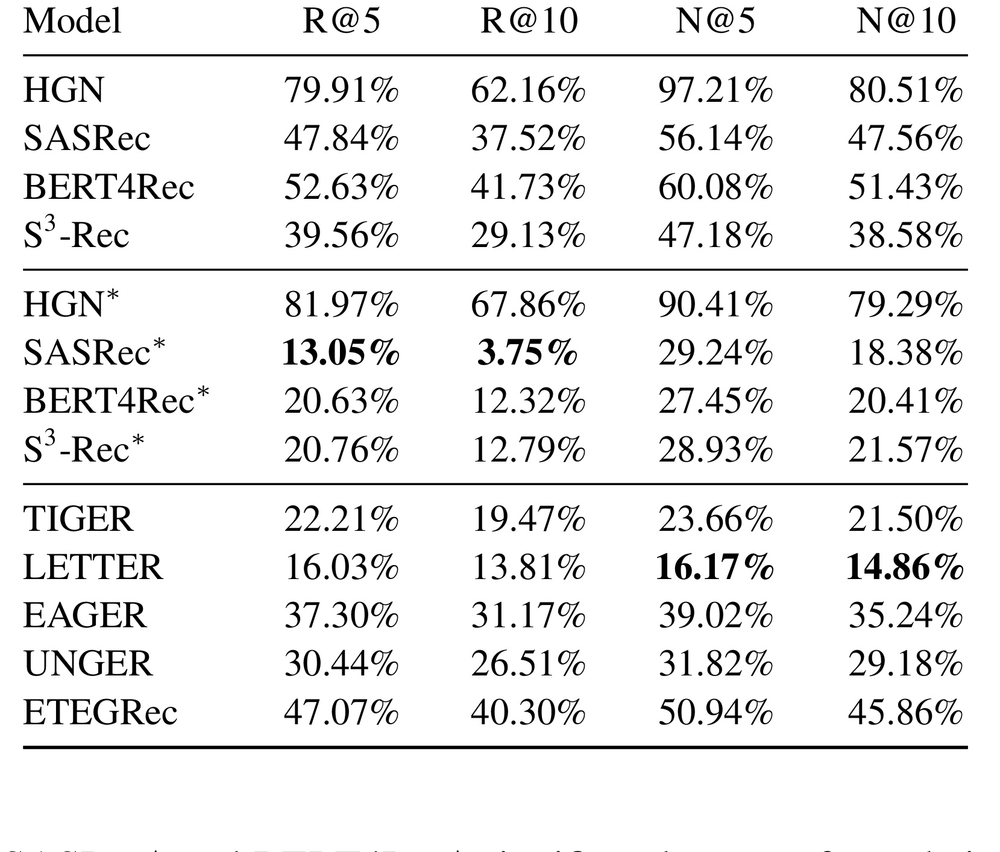
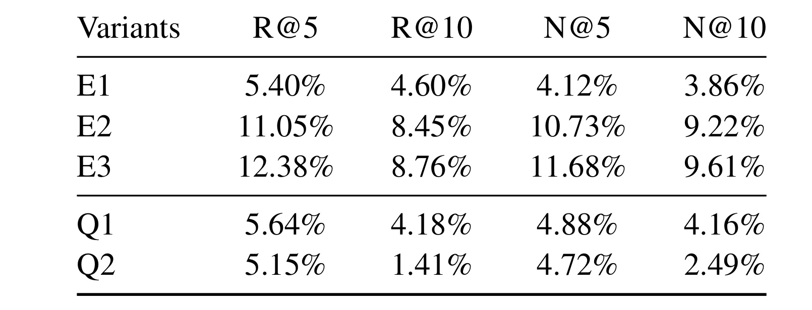
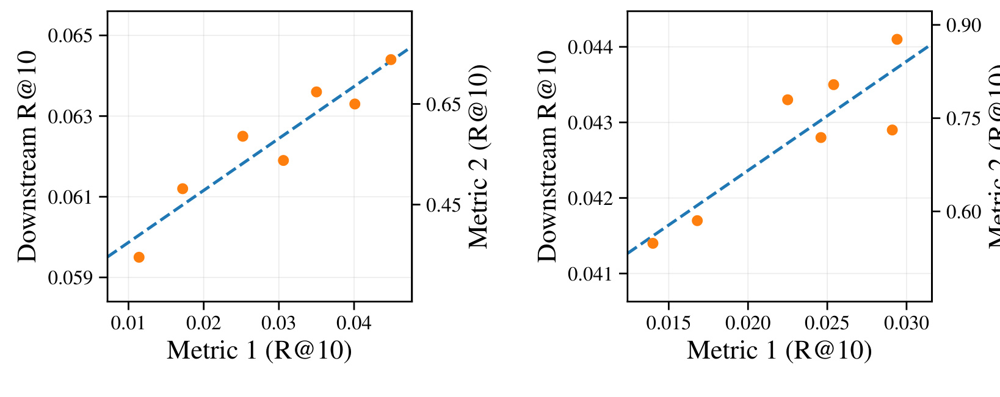
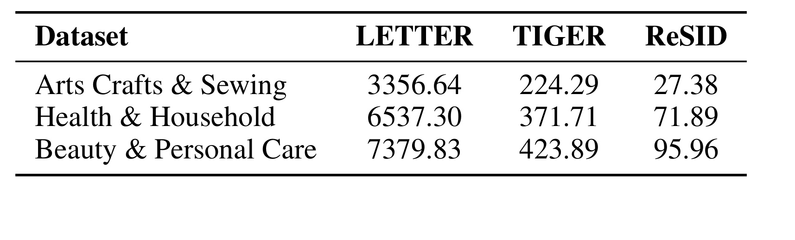
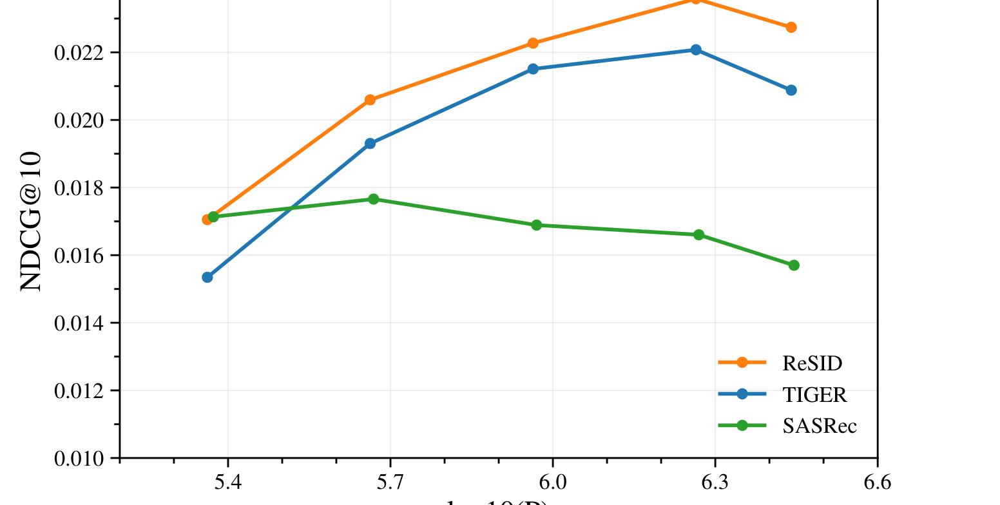
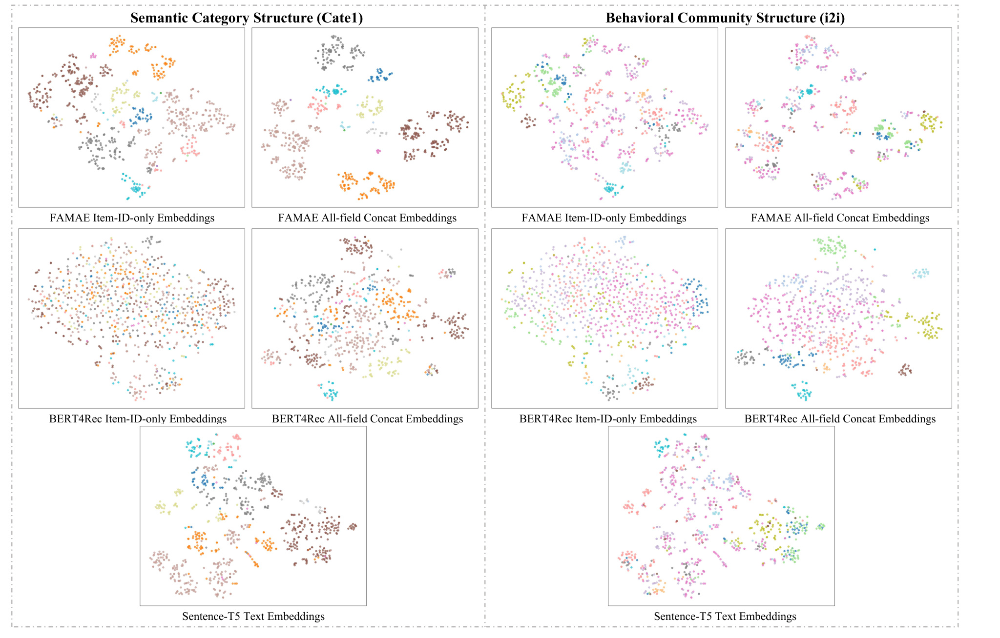
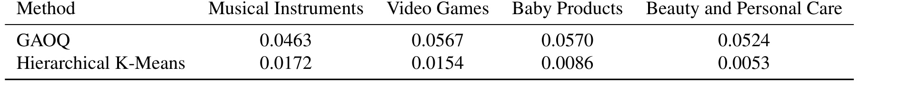

ReSID：重新思考生成式推荐 tokenizer
这篇 arXiv 论文《Rethinking Generative Recommender Tokenizer: Recsys-Native Encoding and Semantic Quantization Beyond LLMs》来自 Central South University，一作 Yu Liang，合作机构包括 Shopee 和 Nanyang Technological University。论文提出 ReSID，把生成式推荐中的 Semantic ID tokenizer 从“先用 LLM 或多模态基础模型学语义 embedding，再做通用量化”的路线，改成推荐原生的表征学习与全局对齐量化；官方实现已在 GitHub 仓库 FuCongResearchSquad/ReSID 公开。阅读这篇论文时，我会把重点放在三个问题上：为什么 semantic-centric SID 和推荐目标错配，FAMAE 如何用字段级 masked auto-encoding 保留推荐充分信息，GAOQ 又如何让离散 code 在自回归解码时更可预测。
语义上相似，不等于推荐上相关；向量重构得好，也不等于 SID 容易预测。ReSID 重新设计的是“给生成模型学习的物品编码”：先学推荐相关的表示，再组织跨前缀更一致的编号。
阅读主线：FAMAE 决定保留什么信息，GAOQ 决定怎样组织编号，生成模型学习怎样预测这些编号。
| 阶段 | 核心问题 | ReSID 的处理 |
|---|---|---|
| E · FAMAE | 物品用什么向量表示？ | 行为历史 + 字段掩码监督，提取静态字段 embedding |
| Q · GAOQ | 向量怎样编成 SID？ | 平衡层次聚类 + 全局锚点匹配 |
| G · 生成推荐 | 用户接下来选择什么？ | 固定 SID 映射后，自回归预测目标编码 |
1. 背景和问题
生成式推荐里的 Semantic ID 思路，本质上是在问一个规模化推荐系统的接口问题：如果候选 item 数量达到百万、千万甚至更大，模型还要不要把每个 item 当作一个彼此无关的原子 ID 来预测。传统序列推荐通常给每个 item 一个 embedding，然后根据用户历史向量和 item embedding 做打分或近邻检索；生成式推荐则希望把 item 编成一串短 token，例如 $[21,3,54]$，让 encoder-decoder 或自回归模型像生成文本 token 一样逐位生成目标 item 的 SID。这个改写的诱惑很明显：它把巨大 item vocab 压成较小的 token vocab，理论上能共享语义结构，也能把 beam search、prefix constraint、sequence generation 等语言模型工具引入推荐。
问题在于，很多 SID tokenizer 并不是为了推荐目标原生设计的。论文把既有路线概括为 semantic-centric pipeline：先从文本、图像或多模态基础模型中抽取 item embedding，再用 RQ-VAE、RQ-KMeans、Hierarchical K-Means 等通用量化方法离散化，最后把离散码交给生成式推荐模型预测。这个 pipeline 的核心假设是，语义相近的 item 应该拥有相近的离散码。但推荐系统里的“相近”往往不是纯语义相近，而是用户行为流形上的相近。零食、气球、餐具在文本或视觉上可能很远，却会在派对场景中被同一用户群体连续购买；两个外观相似的商品也可能因为价格带、库存、受众和上下文差异，在协同信号中完全不同。若 tokenizer 主要受 foundation model 的语义空间支配，下游生成器就会被迫学习一个和用户行为目标不完全一致的监督信号。

Figure 1 把这种错配画得很直观。左侧说明 semantic supervision 和 collaborative supervision 对 item embedding geometry 的要求不同：语义模型会按标题、类目、描述把 item 拉近或拉远，协同信号则按共同购买、共同点击和序列上下文塑造距离。右侧更关键：即便前面的 embedding 还算可用，后续 vector quantization 也可能产生不适合自回归解码的 code。生成器在 beam search 中逐层预测 $C_1,C_2,C_3$，如果第二层或第三层 token 的语义解释高度依赖前缀，或者相同局部 index 在不同 parent 下指向完全不同的方向，有限容量生成器就可能更难共享参数、预测下一位编号；这不自动意味着真实条件熵更高。换句话说，SID 不只是压缩 item 的 label，它同时是生成模型的训练目标；一个离散码只要在几何上重构不错，却在 token 序列上难预测，仍然会伤害推荐。
这篇论文要纠正的第一个偏差，是把“语义信息越强越好”换成“推荐充分信息必须主导”。语义当然有价值，尤其在冷启动、类目约束和属性泛化中很重要；但如果语义 embedding 的训练目标与下一 item 预测弱耦合，推荐系统需要的协同关系会被稀释。作者明确提出，E-stage 表征学习应该 collaboration-dominant，structured feature 和 semantic field 只作为辅助上下文，而不是让 LLM embedding 成为主导空间。这个判断对工业推荐很现实：真实链路里已有大量结构化字段、类目、店铺、行为统计和用户上下文，强行把它们“翻译”成文本再交给基础模型，既昂贵，也会丢掉字段身份和行为口径。
第二个偏差是把量化目标只看成 reconstruction。RQ-VAE 或 RQ-KMeans 可以最小化连续 embedding 到离散 code 的重构误差，但生成式推荐不是一次性拿到完整 code 后再解释 item，而是按 prefix 逐 token 解码。Hierarchical K-Means 的树结构提供逐层细分的前缀结构，但若每个 parent 下的 child index 都是本地任意编号，同一个第二层 token “1” 在不同 first-level prefix 下就可能指向完全不同的语义方向。对自回归模型来说，这种本地编号会让 token embedding 变成多峰分布：同一个 token 在不同 prefix 下承担不同含义，导致 code-level semantic instability。ReSID 的核心贡献就是把表征学习和量化都重新对齐到推荐目标：FAMAE 学推荐充分的结构化 item 表征，GAOQ 让离散码在全局索引意义上更稳定、更低歧义、更适合自回归预测。
2. 方法
2.1 从语义中心 SID 到推荐原生 SID 的三阶段重构
论文首先把 SID-based generative recommendation 明确成三阶段系统。给定用户历史 $H=(i_1,\ldots,i_{T-1})$，目标是预测下一 item $i_T$。每个 item 同时有原始元数据 $X_t$，例如文本、图像或其他非结构内容，也有从交互和元数据中工程化得到的结构化字段 $F_t=\{f_t^{(1)},\ldots,f_t^{(J)}\}$。SID-based 模型用有限长度序列 $C_t=(c_1,\ldots,c_L)$ 替代原始 item identifier，系统包含三件事：encoder $E_\theta$ 把 item 信息映射成连续表示 $\mathbf{z}_t$，quantizer $Q$ 把 $\mathbf{z}_t$ 离散化成 $C_t$，generator $G_\phi$ 根据用户历史预测目标 SID。
如果端到端写目标，理想形式会是让 $G_\phi$ 直接最小化目标 SID 的 cross-entropy。但 SID 本身来自 upstream encoder-quantizer，这就产生了一个自指监督问题：下游生成器要学习的 target，由上游 tokenizer 定义；如果 tokenizer 生成的 SID 噪声大、和协同目标错配或局部编号不稳定，下游模型没有机制自动修正这个监督分布。ReSID 因此不追求“把 tokenizer 和 generator 直接端到端绑死”，而是坚持三阶段解耦，但要求 E-stage 和 Q-stage 的目标本身就面向推荐生成。

Figure 2 是 ReSID 的总览。左侧 FAMAE 在用户历史和目标 item 的结构化字段上做 masked field prediction：历史 item 的字段完整输入，目标 item 的部分字段被替换成 field-specific mask token，Transformer 在目标位置输出 hidden state 并预测被遮住的字段。完成 FAMAE 训练后，真正交给量化器的不是混入用户历史的目标 hidden state，而是所有字段 embedding 的 concat 表示。右侧 GAOQ 则先做 balanced K-Means 的层级划分，再把每个 parent 下的 child centroid 做 residual centering，并与全局共享的近似正交 anchor 通过 Hungarian matching 对齐。这样生成的 SID 既保留层级压缩能力，又让同一层的相同 index 尽量跨 prefix 表达一致方向。
这一框架有两个值得注意的工程边界。第一，ReSID 并不依赖 LLM 生成 item embedding。论文对需要 text embedding 的 baseline 使用 Sentence-T5-xxl，但 ReSID 直接基于 item-ID、store ID、一级/二级/三级类目等结构化字段学习表示。第二，下游 generator 仍然是统一的 T5-style encoder-decoder，和其他 SID baseline 保持相同 G-stage 配置。也就是说，论文希望把收益归因到 tokenizer，而不是归因到更强的 generator 或额外侧信息。这个控制很重要，因为很多 SID 论文容易把“多用了 item metadata”的提升误认为“生成式推荐范式”的提升。
2.2 FAMAE：目标位置的字段感知掩码自编码
FAMAE 的基本假设是推荐系统常见的条件独立口径：当结构化字段和用户上下文足够充分时，预测目标 $Y$ 对原始元数据 $X$ 条件独立，即 $Y\perp\!\!\!\perp X\mid(F_T,H)$。这是论文建模的充分性假设，并不保证现有字段在所有业务中都覆盖文本和图像的信息；只有此前提成立时，结构化字段才可以被看作预测用户行为的 sufficient statistics。FAMAE 的训练目标就建立在这个前提上：给定用户历史和目标 item 的未遮住字段，预测目标 item 被遮住的字段，而不是做通用语义重构。
核心损失写成：
符号解释：$\mathcal{M}$ 是由 masking policy $\pi$ 采样得到的被遮字段集合；$k$ 是字段编号；$\alpha_k$ 控制不同字段的重要性；$f_T^{(k)}$ 是目标 item 的第 $k$ 个字段；$\mathbf{h}_T$ 是 Transformer 在目标位置输出的上下文化表示。这个目标保留字段粒度的监督。 Transformer 输入仍采用字段 embedding 求和；区别在于训练时分别预测被遮字段，量化时提取各字段 lookup embedding 并拼接。不能把方法的收益简单解释成“输入阶段没有融合”。
字段预测分布用 scaled cosine softmax 定义：
符号解释：$\mathcal{V}_k$ 是字段 $k$ 的取值空间；$\mathbf{e}_T^{(k)}=emb_\theta(f_T^{(k)})$ 是字段 embedding；$d$ 是 embedding 维度；$\mathcal{K}$ 用缩放余弦相似度计算 hidden state 与候选字段值的匹配。这个分布实际把每个字段预测变成一个分类问题。若字段 vocab 很大，论文在实现细节中使用 sampled classification，采样 128 个 negative，并保持 embedding/hidden size 128、2 层 Transformer、4 个 attention heads、batch size 2048 等相对轻量配置。与基于 LLM 的 tokenizer 相比，这里的训练对象和推荐系统字段更接近，也更容易在大规模 item catalog 上迭代。
FAMAE 的输入构造也体现了推荐原生目标。序列前 $T-1$ 个位置是用户历史 item，最后一个位置是目标 item；每个位置的多个字段 embedding 与 learnable positional encoding 相加后送入双向 Transformer。对目标 item，作者先均匀采样 $K\sim U\{1,\ldots,J\}$，再随机选取 $K$ 个字段形成 $\mathcal{M}_K$，并用字段专属 mask token $\mathbf{m}_j$ 替换被遮字段：
符号解释：$\tilde{\mathbf{e}}_T$ 是目标位置送入 Transformer 的输入 token；$\mathbf{p}_T$ 是位置编码；$\mathbf{m}_j$ 是第 $j$ 个字段的 mask token。字段专属 mask token 的作用是保留字段身份：模型知道“这里缺的是店铺字段”还是“这里缺的是三级类目字段”，而不是只看到一个通用缺失符号。训练后用于 SID quantization 的 item 表示不是 $\mathbf{h}_T$，因为 $\mathbf{h}_T$ 混入了用户历史 $H$，会带有 user-specific context；论文取所有字段 embedding 的拼接 $\operatorname{concat}(\{\mathbf{e}^{(j)}\}_{j=1}^J)$ 作为 item-level representation，这样既保留字段结构，又避免把某个用户上下文写入全局 item code。
两种遮挡模式：同一个任务怎样结合行为与属性？
下面是帮助理解的示例，字段值不是论文样本。用户历史为 A → B → C，下一物品为 D：
| 遮挡情形 | 目标 D 可见字段 | 模型需要学什么 |
|---|---|---|
| 全部字段遮挡 | 所有字段都为各自的 MASK | 只依赖历史，学习协同关系和序列规律 |
| 只遮 item ID | 店铺、一级/二级/三级类目 | 结合历史和属性，区分具体物品 |
部分遮挡还会产生介于两者之间的训练任务。双向注意力只作用于历史和已遮挡目标，不额外读取目标之后的未来行为。
最容易混淆的接口：输入求和，量化拼接
用户历史参与把 embedding 训练好；最终每个物品的 SID 来自静态 lookup embedding，不是用户上下文中的隐藏状态。
这里，$s_i,a_i,b_i,c_i$ 是物品对应的店铺和三级类目字段值，$e$ 表示训练后的字段查表向量。训练输入用 sum pooling，量化输入用 concatenation。同一商品换一个用户，不会因此得到另一套 SID。
2.3 预测充分性的互信息解释和任务感知指标
论文没有把 FAMAE 只描述成工程 trick，而是给出一个互信息下界解释。设 $w_k=\alpha_k\Pr_{\mathcal{M}\sim\pi}(k\in\mathcal{M})$，则有：
符号解释：$I(\mathbf{h}_T;f_T^{(k)})$ 表示 hidden state 与第 $k$ 个字段之间的互信息；$H(f_T^{(k)})$ 是字段熵；$\mathcal{L}_{\mathrm{FAMAE}}$ 是上面的字段预测损失。右侧第一项与模型参数无关，因此最小化 FAMAE loss 会提高一个 mask-weighted mutual information lower bound。这个结论说明 FAMAE 不是单纯“多任务预测字段”，而是在鼓励目标位置表示保留能够恢复结构化字段的信息；只要这些结构化字段和用户上下文足以预测行为目标，这种表示就更接近推荐充分表征。
论文还用 Data Processing Inequality 解释为什么单标签序列模型表示不够。标准 SASRec/BERT4Rec 类模型通常预测一个融合后的 next-item representation，可以看成 $\mathbf{u}_T=f(F_T)$，其中 $f$ 是 pooling 或 MLP 等不可逆融合。数据处理不等式给出：
符号解释：$\mathbf{u}_T$ 是字段融合后的表示；$F_T^{(<k)}$ 表示前 $k-1$ 个字段。这个不等式描述确定性处理不能增加互信息，但不能据此断言 item ID 天然缺少属性信息：若属性由 item ID 唯一确定，完整 ID 本身就可标识这些属性。是否严格丢失信息取决于映射和分布。更稳妥的理解是，多字段监督改变有限模型的训练约束及 embedding 几何结构。提高互信息下界也不等于证明最终 Recall 必然提高，中间仍隔着静态表示提取、量化和生成模型训练。
基于这个解释，论文提出两个 task-aware embedding quality metrics。Metric 1 是 full-field masking 下的目标 item 预测准确率：目标 item 的所有结构化字段都被遮住，模型只能依赖用户历史和学习到的 embedding space 来恢复目标字段。它衡量的是协同建模能力，即 $H$ 中的序列信息是否能通过表示空间传递到目标 item。Metric 2 是 single-field masking 下的 item-ID 预测准确率：只遮 item-ID 字段，其他结构化字段保留。它衡量的是表示空间是否保留细粒度、可区分的语义和空间结构。两个指标分别对应“协同可预测”和“语义可辨别”，比单看重构误差或下游 G-stage 结果更早、更便宜，也能帮助判断 E-stage checkpoint 是否值得进入量化阶段。
2.4 GAOQ：通过全局锚点统一跨前缀编号
GAOQ 解决 Q-stage 的目标错配。论文认为一个好的 SID quantizer 应同时满足三个条件：完整 code $C$ 能低失真地重构连续表示 $\mathbf{z}$；每个单独 code $c_l$ 都有足够语义贡献且尽量 prefix-invariant；code 序列本身要有低 prefix-conditional uncertainty，方便自回归生成器逐层预测。作者把理想目标写成：
符号解释：$H(\mathbf{z}\mid C)$ 是完整 SID 对连续表示的重构不确定性；$H(\mathbf{z}\mid c_l)$ 衡量单个 code 对表示的解释能力，越低说明单个 code 越有信息；$H(c_l\mid C_{(<l)})$ 衡量在已有 prefix 下第 $l$ 层 code 的内在分支不确定性；$H(c_l)\approx\log|c_l|$ 是边际 code 使用均衡约束，避免 index collapse。这个目标把重构、单码可解释性和顺序可预测性放在同一个框架里，比只最小化 RQ-VAE reconstruction loss 更贴近生成式推荐。
本地索引的 Hierarchical K-Means 提供逐层细分的树路径；但它的问题是 child index 在每个 parent 下本地任意编号。同一个 $c_l=1$ 在不同 prefix 下可能对应完全不同方向，造成 prefix-dependent ambiguity。论文用如下分解说明这个问题：
符号解释：左侧是只知道第 $l$ 层 code 时对连续表示的残余不确定性；第一项是在同时知道 prefix 后的细化重构不确定性；第二项是给定当前 code 后，连续表示与 prefix 之间仍然共享的信息。局部任意编号可能增大跨前缀解释的歧义，但不能仅凭编号方式就断言 $I(\mathbf{z};C_{(<l)}\mid c_l)$ 必然变大，因为解释同一个 code 还必须依赖 prefix。对生成器来说，这意味着 token embedding 无法学到稳定含义；同一个 token 在不同 prefix 下多峰，降低了 sequence modeling 的效率。
GAOQ 的做法是在 Hierarchical K-Means 之上加全局对齐。每一层先对 parent node 内 item 表示做 balanced K-Means，得到 child clusters 和 child centroids；然后对每个 child centroid 减去 parent centroid，形成 centered residual direction；再构造一组全局共享的近似正交 anchors；最后用 Hungarian matching 按 cosine similarity 把 child residual directions 一对一匹配到全局 anchor index。这样，同一层的同一个 index 不再只是“某个 parent 下的第 1 个 child”，而尽量表示跨 parent 一致的方向。
从“局部编号”到“全局参照”：一个两父簇示例
这是解释算法的构造例子。假设父簇 A、B 内都有相对方向 α、β：
| 相对方向 | A 原编号 | B 原编号 | 对齐后的共同参照 |
|---|---|---|---|
| α | 1 | 2 | token 1 |
| β | 2 | 1 | token 2 |
GAOQ 让同层 token 尽量遵循共同的方向规则。这里的方向来自 embedding 空间，不是人为指定“1 代表数码、2 代表食品”。
算法可拆成四步：
- 平衡聚类：在父簇内划分子簇，控制容量，避免物品挤在少数分支。
- 中心化：子簇中心减去父簇中心，比较相对方向。
- 共享锚点：同层使用一组全局参考方向；“正交”主要描述锚点。
- 一对一匹配：以余弦相似度为分数，用匈牙利算法给子簇分配锚点编号。
$\mu_p$ 是父簇中心，$\mu_j$ 是子簇中心，$a_k$ 是共享锚点，$\pi$ 是一对一分配。独立选最近锚点会让两个子簇撞号；整体匹配同时保留父簇内可区分性。第一层已是全局聚类，不需要跨父簇对齐；最后一位主要区分共享前缀的物品。三位 SID 不等于直接串起三级类目。
理论边界：重新编号不自动降低真实条件熵
以下是本笔记的数学辨析：当聚类划分和概率分布不变，前缀内的一对一重编号不会改变真实条件熵。
这里也对前缀作对应的一一映射。由于只是置换每个条件分布中的标签，各分支概率没有改变。全局对齐仍可能让有限容量模型更容易共享 token embedding、减少上下文特例，从而改善实际预测交叉熵与推荐效果；这与降低分布本身的熵是不同命题。
论文前面的熵目标应读作设计准则与理论解释。GAOQ 实际执行聚类、中心化与匹配，并不直接计算三个熵项后做梯度优化。RQ 的残差也依赖之前选中的码，不能把 RQ 各层说成统计独立。

Figure 8 对 GAOQ 的直觉解释很有帮助。Hierarchical K-Means 的本地编号会让 Vases 和 Snacks 这种协同关系不同的 item 在第二层共享相同 index，引发 conflict；RQ-VAE 虽然每层全局编号，但 residual quantization 的不同层之间缺少层级 prefix 约束，单个 code 的解释也不稳定。GAOQ 在层级 K-Means 的基础上做 centering 和 global alignment，让所有 parent 下的 child clusters 都对齐到同一组 anchor，因此同一个 second-level code 更像同一方向的语义或协同残差。这里的“orthogonal”不是为了数学优雅，而是为了减少 anchor 之间的方向重叠，让 code token 在生成器 embedding space 中更可分。
算法复杂度方面，GAOQ 仍然是非参数化量化，不需要像 LETTER 那样训练昂贵的 tokenizer。设 item 数为 $N$，量化输入维度为 $d_q$，第 $l$ 层 branching factor 为 $b_l$，balanced K-Means 迭代数为 $I_l$，全局 anchor 数为 $g_l$，第 $l-1$ 层 parent 节点数为 $P_{l-1}$，论文给出主导 FLOPs：
符号解释：第一项来自各层 balanced K-Means 的距离计算；$P_{l-1}b_ld_q$ 是 centering 成本；$d_qg_l^2$ 是一次性构造近似正交 anchors 的 QR 成本；$P_{l-1}(b_lg_ld_q+b_l^3)$ 来自每个 parent 下的 cosine similarity matrix 和 Hungarian matching。这个公式提醒我们，GAOQ 的工程成本主要随 item 数、分支因子和 parent 数增长，但它不像 LLM embedding 或训练式 RQ-VAE 那样需要大模型 tokenizer 反复训练。
2.5 训练、量化和生成推理链路
ReSID 的完整链路可以按 E/Q/G 三阶段落地。E-stage 训练 FAMAE 和 side-info 增强的序列 baseline 保持相近模型规模：embedding/hidden size 128，2 层 Transformer，4 个 attention heads，FFN 维度 512，dropout 0.1，AdamW 学习率 0.001，batch size 2048，最多 500 epochs 并 early stopping。这些细节说明 FAMAE 更接近轻量序列模型预训练，而不是基础模型微调。训练完成后，每个 item 的表示由字段 embedding concat 得到，不包含某个用户历史的上下文化 hidden state。
Q-stage 用 GAOQ 构造三层 SID。论文在附录列出每个 Amazon-2023 子集的 branching factors，例如 Musical Instruments 使用 $(32,40,19)$，Books 使用 $(256,256,8)$。第一层是原始 embedding space 的全局聚类，不需要跨 parent 对齐；第二层及之后才使用 residual centering、orthogonal anchors 和 Hungarian matching，因为这些层最容易出现本地 index 语义不一致。Balanced K-Means 还承担一个重要作用：保持每层 marginal code usage 接近均匀，从而满足 $H(c_l)\approx\log|c_l|$ 的防 collapse 约束。
G-stage 对所有 SID-based 方法保持相同 T5-style encoder-decoder：4 层 encoder、4 层 decoder，hidden size 128，FFN 维度 512，4 个 attention heads，batch size 2048，学习率 0.005，beam search size 50。这个控制设计让实验更干净，因为 ReSID 和 TIGER、LETTER、EAGER、UNGER、ETEGRec 的差别主要在 SID tokenizer。对于复现者，关键检查点应该放在 tokenizer 输出：每层 code 使用是否均衡，相同 code 在不同 prefix 下是否方向一致，SID 与用户历史 item 是否有更高 task-consistent overlap，而不是第一时间去换更大的 generator。
训练顺序是 FAMAE → 静态字段向量 → GAOQ → 固定 item–SID 映射 → 生成模型；G-stage 的损失不会持续反向更新前面的 tokenizer。
$\mathcal H$ 是用户历史，$C=(c_1,c_2,c_3)$ 是目标物品编码。这个自回归范式在 TIGER 等工作中已经存在。标题中的 Beyond LLMs 指不依赖大型预训练语言编码器提取物品向量，并不排斥 Transformer 或 T5 风格结构。
3. 实验结果
3.1 主结果：公平比较比单纯跑分更重要
实验使用 Amazon-2023 review dataset 的十个子集：Musical Instruments、Video Games、Industrial & Scientific、Baby Products、Arts, Crafts & Sewing、Sports & Outdoors、Toys & Games、Health & Household、Beauty & Personal Care 和 Books。作者采用 5-core 过滤、按时间构造用户序列、leave-one-out 评估，最大序列长度 32，并抽取 store identifier 以及一到三级 category identifier 作为结构化 side information。指标是 Recall@5/10 和 NDCG@5/10。baseline 分三类：只用 item-ID 的 HGN、SASRec、BERT4Rec、S3-Rec；加入结构化字段的对应星号版本；以及 SID-based generative recommenders TIGER、LETTER、EAGER、UNGER、ETEGRec。
先认清表格口径，再看提升幅度
| 原论文表格 | 数字含义 | 比较范围 |
|---|---|---|
| Table 1 | ReSID 相对各基线的平均相对提升 | 十个数据集 |
| Table 2 | ReSID 相对消融版本的平均相对提升 | 三个数据集 |
| Table 3 | 量化阶段耗时 | 不包含 E-stage |
| Table 4 / 5 | 各模型的绝对 Recall / NDCG | 逐数据集结果 |
Table 1 / 2 不是每行模型的绝对 Recall。提升越小，表示该基线越接近 ReSID；星号 * 表示加入结构化辅助字段，不是显著性标记。
单目标测试中，Recall@10 看目标是否进入前十；NDCG@10 还看命中位置，排得更靠前得分更高。对 Table 1，每个指标先在各数据集计算相对提升，再做宏平均：
其中 $d$ 为数据集编号，$R$ 为对应模型的 Recall@10。这不同于先把绝对 Recall 平均后再计算提升。

Table 1 的读法要特别注意“fair comparison”。很多早期 SID 方法会用丰富 item metadata，而 sequential baseline 只用 item-ID，这会高估 SID 范式本身的收益。ReSID 把 sequential baseline 也加上 side-info 字段后，SASRec* 和 BERT4Rec* 明显变强，甚至能接近或超过一些 SID baseline；这说明过去一部分提升其实来自额外信息，而非生成式解码。即便在这个更严格口径下，ReSID 仍然取得最优平均结果。相对最强 SID baseline LETTER，ReSID 的平均相对提升为 R@5 16.03%、R@10 13.81%、N@5 16.17%、N@10 14.86%。相对 SASRec*，R@10 的平均提升只有 3.75%，这反而是有价值的结果：它说明 side-info augmented sequential recommender 已经很强，ReSID 的胜出不是靠不公平输入，而是靠 tokenizer 目标更对齐。
主结果还支持一个更深的判断：单纯“引入协同信号”并不够。LETTER 也会在 SID tokenizer 中注入 collaborative supervision，因此它比纯语义 tokenizer TIGER 更强；但 ReSID 比 LETTER 更强，说明问题不只是有没有协同信号，而是协同信号是否在 representation learning 和 quantization 两个阶段都以推荐目标主导。ETEGRec 尝试端到端联合优化 tokenizer 和 downstream recommendation loss，但本文结果不如 ReSID。作者从非平稳 supervision 角度解释这一现象：SID 同时是中间表示和训练 target，若不断被 downstream loss 改写，生成器看到的 target distribution 也会变。这是作者的机制解释，不能从单个基线的结果推出所有端到端 tokenizer 都不稳定。
一个具体例子：相对提升与百分点相差在哪里？
以下为原论文 Table 4 的 Musical Instruments 绝对 Recall@10：
| SASRec | SASRec* | TIGER | LETTER | ReSID |
|---|---|---|---|---|
| 0.0528 | 0.0639 | 0.0592 | 0.0623 | 0.0645 |
ReSID 相对 LETTER：6.23% → 6.45%，增加 0.22 个百分点，相对提升约 3.53%。这不是 Table 1 的 13.81%，后者平均了十个数据集。
另一个边界来自 Industrial & Scientific：SASRec* 的 Recall@10 为 0.0538，ReSID 为 0.0512。因此论文整体平均表现强，不代表每个数据集、每个指标都第一。
3.2 消融：FAMAE 和 GAOQ 都不是可替换小模块

Table 2 把 ReSID 和五个受控变体比较。E-stage 消融固定 GAOQ，只替换表示来源：E1 用 LLM embedding，E2 用 SASRec representation，E3 用 BERT4Rec representation。Q-stage 消融固定 FAMAE，只替换量化器：Q1 用 RQ-VAE，Q2 用 Hierarchical K-Means。ReSID 对所有变体都有平均相对提升，其中相对 E2/E3 的 R@5 提升达到 11.05%/12.38%，说明纯协同序列表示虽然能预测 next item，但并不等价于好的 SID quantization representation，因为它可能缺少字段身份和结构化语义。相对 E1 的提升则说明纯 LLM 或文本语义 embedding 也不够，推荐协同目标不能只作为后处理微调。
Q-stage 的结论同样直接。相对 Q1，ReSID 在 R@5 上提升 5.64%，说明只优化 reconstruction 的 RQ-VAE 对 autoregressive decoding uncertainty 不敏感；相对 Q2，R@10 只有 1.41% 的提升但 N@5/N@10 仍有提升，支持层次结构本身已经有效的判断，但缺少 global alignment 时仍存在同一 index 跨 prefix 语义不一致的问题。对工程复现来说，这张表给出了一组必要 sanity check：如果只用 FAMAE + RQ-VAE 就接近完整 ReSID，说明本地数据的 prefix ambiguity 可能不严重；如果 FAMAE + Hierarchical K-Means 与 GAOQ 差不多，则要检查 GAOQ 的 anchor matching 是否真正生效，或者下游 generator 是否没有充分使用 code token 的语义一致性。
Table 2 的 R@10 汇总（三个数据集）：完整 ReSID 相对 E1 / E2 / E3 分别提升 4.60% / 8.45% / 8.76%，相对 Q1 / Q2 提升 4.18% / 1.41%。这些是完整模型对各受控替换的比较，不能把模块增益直接相加，也不能把相对 LETTER 的全部提升归给全局对齐。
3.3 任务感知指标：E-stage 质量能提前诊断

Figure 3 展示 FAMAE 训练过程中两个 embedding quality metrics 与下游 R@10 的关系。左图是 Musical Instruments，右图是 Baby Products；横轴是 Metric 1，即 full-field masking 时只依赖用户历史预测目标 item 的 R@10；右侧纵轴同时显示 Metric 2，即只遮 item-ID 字段时的 item-ID R@10。随着 FAMAE checkpoint 提升，downstream R@10 也同步提高，支持这两个 proxy metric 在所测 checkpoint 上与 SID 下游质量相关；它们不能完全替代最终推荐评估。这个证据对生产训练很重要，因为完整 E/Q/G pipeline 代价不低；如果每个 FAMAE checkpoint 都必须跑完 GAOQ 和 T5 generator 才判断质量，迭代会很慢。Metric 1/2 允许先在 E-stage 做早期筛选，把“协同预测是否足够”和“字段语义是否可辨”拆开看。
这两个指标也帮助定位失败原因。若 Metric 1 高而 Metric 2 低，表示模型能从历史预测目标，但字段空间缺少可区分语义，量化后可能形成语义模糊的 code；若 Metric 2 高而 Metric 1 低，说明字段结构和类目语义很好，但协同信号没有被历史上下文充分吸收，SID 可能回到 semantic-centric 的老问题。ReSID 的主张不是让两个指标无限高，而是在推荐充分和语义可辨之间找到合适交点。对于线上系统，可以把这两个指标作为 tokenizer 训练 dashboard 的前置质量门槛，避免只看最终 Recall 或 NDCG 才发现表示错配。
3.4 效率：tokenizer 不依赖 LLM 的工程收益

Table 3 对比 ACS、Health & Household、Beauty & Personal Care 三个数据集的量化耗时。LETTER 分别需要 3356.64、6537.30、7379.83 分钟；TIGER 分别需要 224.29、371.71、423.89 分钟；ReSID 分别为 27.38、71.89、95.96 分钟。LETTER/ReSID 约为 77–123 倍，论文概述为最高约 122 倍；TIGER/ReSID 按表值约为 4.4–8.2 倍。这张表测量 Q-stage：GAOQ 用聚类和匹配替代神经量化器训练。FAMAE 较轻以及省去大型语言编码器的成本属于 E-stage，不能算作这张表已测得的加速来源。
需要谨慎的是，Table 3 只比较 quantization stage，不包含 representation learning。论文解释说 FAMAE 的成本接近 SASRec 这类轻量序列模型，而 prior SID pipelines 依赖的 foundation encoder 成本可能被 amortized 或未明确报告，因此难以公平计入。但对工程落地而言，这仍然是强信号：一个 tokenizer 如果每次重建都要数天甚至数周，就不适合频繁更新 item catalog；ReSID 至少把重建成本拉回到可日常迭代的区间。推荐系统中的 item 新增、类目调整、店铺变化都很频繁，SID tokenizer 的重建速度会直接影响部署节奏。
“最高约 122 倍”只指量化阶段，不是整个训练流程或线上推理。论文还指出，SID 生成模型的收敛仍可能明显慢于 SASRec 等 item-ID 模型。
3.5 缩放趋势：SID 接口能否利用更大 backbone

Figure 4 在 Baby Products 上比较不同 non-embedding backbone 参数规模下的 NDCG@10。ReSID 在各个规模点都高于 TIGER 和 SASRec，并且随参数增大整体呈更有利的提升趋势；最大规模点略有回落，论文推测可能来自低数据 regime 下的过拟合。这个实验的意义不在于得出一个严格 scaling law，而是说明 tokenizer 质量会影响 backbone 扩容的收益。如果 SID 本身语义不稳定或不适合自回归解码，增加 generator 参数也可能只是在学习更复杂的噪声 target；如果 SID 更稳定、更低 prefix uncertainty，额外 backbone capacity 才能更有效地转化为排序质量。
这点对推荐系统很实际。很多团队在生成式推荐上会优先考虑换更大的 encoder-decoder 或引入 LLM backbone，但如果 item code 本身不对齐，扩模收益可能很快饱和。ReSID 提供的启发是：在扩 generator 之前，应先审计 SID token 的语义一致性、前缀分支熵和单 code 信息量。一个更小但 tokenizer 对齐的生成模型，可能胜过一个更大但 target distribution 混乱的模型。Figure 4 和 Table 3 放在一起看，也形成了“更快 tokenizer + 更好扩容接口”的组合证据。
3.6 表示分析：FAMAE 同时保留语义和协同结构

Figure 5 用 t-SNE 比较 FAMAE、BERT4Rec 和 Sentence-T5 的 item embeddings。左侧按一级类目颜色显示 semantic category structure，右侧按 item-item co-occurrence graph 的 Louvain community 显示 behavioral community structure。FAMAE 的优势在于两边都相对有结构：在类目视角下，它能形成较清晰的 semantic clusters；在行为社区视角下，它也能把同一交互社区的 item 聚在一起。Sentence-T5 更偏语义聚类，但行为社区散得更开；BERT4Rec 更偏协同结构，但类目分离较弱。这正好对应论文对 FAMAE 的定位：不是让语义和协同互相竞争，而是用结构化字段的互预测把必要语义作为协同推荐的辅助约束。
这张图也解释了为什么 FAMAE 表示比 SASRec/BERT4Rec 表示更适合后续量化。序列模型为了预测 next item，可以学到强协同关系，但如果字段空间无结构，量化器在压缩时可能无法稳定地区分 item semantic direction；Sentence-T5 之类文本 embedding 有语义结构，但不一定知道哪些 item 在用户行为上相互替代、互补或连续出现。FAMAE 借助目标位置字段掩码，把用户历史聚合和字段预测绑定在一起，使 item-ID embedding 和 category embedding 在同一空间中对齐。对 SID 来说，这种双重结构比单一语义或单一协同更稳，因为离散码既要被下游生成器预测，也要能映射回具有合理语义和行为邻域的 item。
3.7 GAOQ 歧义证据和完整实验链条

Table 10 量化了 GAOQ 对 indexing ambiguity 的影响。它统计在第二层共享同一 code 的 item，其 centered embedding directions 的平均 pairwise cosine similarity。GAOQ 在 Musical Instruments、Video Games、Baby Products、Beauty & Personal Care 上分别为 0.0463、0.0567、0.0570、0.0524；Hierarchical K-Means 则只有 0.0172、0.0154、0.0086、0.0053。论文文本里说 Hierarchical K-Means 的值低 3-10 倍，意味着同一个 code 下的方向更分散，也就是同一 index 的语义解释更依赖 prefix。GAOQ 值更高，说明全局 anchor matching 让同一 code 聚到更一致的 residual direction，支持方向一致性改善，但余弦相似度并不直接测量互信息或真实条件熵。
完整实验链条比较扎实：Table 1 给出平均主结果，Table 2 支持两模块在所测配置中的增益，Figure 3 给出代理指标与下游结果的相关证据，Table 3 测得量化阶段成本下降，Figure 4 说明 backbone 扩模收益更好，Figure 5 和 Table 10 分别从表示和量化两端解释为什么有效。附录还有完整主结果宽表、完整消融表、数据集统计、branching factor、branching sensitivity、UMAP 分布、attention heatmap、SID overlap ratio 和 FLOPs 分析。虽然论文没有线上 A/B，也不是工业系统 paper，但它在离线公平性和机制解释上比很多 SID 工作更完整。
需要保留的限制也很清楚。第一，所有实验都在 Amazon-2023 子集上，结构化字段主要是 store ID 与类目层级；如果业务中的 side-info 更稀疏、噪声更大或强依赖文本/图像，FAMAE 的字段预测目标需要重新设计。第二，ReSID 虽然不依赖 LLM，但仍然需要高质量结构化特征。对内容平台、短视频或资讯推荐，文本/视觉理解可能不能完全被现有字段替代，直接排除 foundation model 未必合适。第三，GAOQ 的 branching factors、anchor 数和 balanced K-Means 实现会影响结果，论文提供了超参表，但不同 catalog size 下仍需重新搜索。第四，ReSID 评估的是离线 next-item recommendation，真正上线还要检查 candidate mapping、beam search invalid code、冷启动 item 更新、长尾曝光和延迟等链路指标。
4. 总结
FAMAE 学什么：让物品向量同时承接行为关系与字段监督。
GAOQ 改什么：让不同前缀下的同层编号尽量遵循一致规则。
最值得记住：给物品怎样编 SID，本身就在定义生成模型需要学习什么任务。
4.1 我的判断
ReSID 的价值不在于发明一个更复杂的 tokenizer 名字，而在于把 SID-based generative recommendation 的问题重新放回推荐系统本身。过去很多路线默认“语义 embedding + 通用量化 + 生成模型”就足够，但这篇论文指出，推荐里的 item code 既是信息压缩结果，也是生成器的监督目标；如果上游表征和量化没有对齐协同预测与顺序可预测性，下游模型只是在努力拟合一个不合适的 token 序列。FAMAE 解决表征学习的充分性，GAOQ 解决量化索引的一致性，两者合起来构成了比纯 LLM embedding 更推荐原生的 SID pipeline。
我认为最值得借鉴的是两个审计视角。第一个是 E-stage 审计：不要只看 embedding reconstruction 或文本相似度，要同时看 full-field masking 下的协同预测能力和 single-field masking 下的 item-ID/字段辨别能力。第二个是 Q-stage 审计：不要只看 quantization loss，要看每层 code 的边际使用、prefix-conditional uncertainty、同一 index 跨 prefix 的语义方向是否一致。很多生成式推荐失败，可能并不是 generator 不够强，而是 tokenizer 已经把行为结构打散了。
4.2 工程启发与复现建议
如果要在本地系统复现，第一步应先构造结构化字段版本的 item representation 数据，而不是直接套文本 embedding。字段至少应覆盖 item-ID、类目层级、作者/店铺/来源、内容属性和可稳定更新的行为统计；字段缺失率、更新频率和线上可用性需要提前审计。第二步训练 FAMAE 时，应保存 Metric 1/2 的 checkpoint 曲线，并在进入 GAOQ 前设质量门槛。第三步实现 GAOQ 时，要单独验证每层 balanced code usage、anchor matching 后同一 code 的方向一致性，以及 SID 与用户历史 item 的 overlap ratio。第四步才是训练统一 T5-style generator，并与 item-ID baseline、side-info augmented baseline、TIGER/RQ-VAE baseline 做公平比较。
上线前还需要额外保护。生成式 SID 系统可能生成无效 code，必须有 prefix constraint 或 code-to-item mapping 检查；GAOQ 的层级 code 也要支持 item 增量更新，否则 catalog 高频变化会造成重建压力。对业务指标，建议至少分 head/body/tail item、老 item/新 item、不同类目和不同用户活跃度做分桶。ReSID 强调推荐原生表征，但不代表语义模型完全没用；在冷启动内容理解很强的场景，可以考虑把 foundation model 输出作为结构化字段之一，而不是让它单独主导 tokenizer 空间。
4.3 局限与后续跟进
这篇论文的主要局限有四点。第一，实验集中在 Amazon-2023，公开数据虽多达十个子集，但和工业推荐的曝光偏差、在线反馈和多目标排序仍有差距。第二，FAMAE 依赖结构化字段充分性假设，若业务字段无法覆盖文本/视觉语义或存在大量脏字段，推荐原生 embedding 可能并不自然优于 foundation embedding。第三，GAOQ 引入 balanced K-Means、orthogonal anchors 和 Hungarian matching，虽然比训练式 tokenizer 快，但实现复杂度高于普通 RQ-KMeans。第四，论文没有报告线上 A/B、服务延迟、增量更新和无效 SID 生成比例，这些都是生成式推荐落地时绕不开的问题。
后续我会重点跟踪三件事。第一，看官方实现是否补齐完整训练脚本、数据预处理细节和 GAOQ 超参搜索策略。第二，把 ReSID 与 TIGER、LETTER、EAGER、UNGER、ETEGRec、VarLenRec、CAPSID 等 SID 工作放在同一张方法表里，比较它们在表征来源、量化目标、code 长度、prefix constraint 和工程成本上的差异。第三，如果做内部实验，优先从 tokenizer offline audit 开始，而不是直接接线上召回；只有当 E-stage metric、GAOQ ambiguity、Recall/NDCG、无效 code 和延迟都稳定后，再考虑 shadow traffic 或小流量实验。总的来说，ReSID 是一篇适合推荐系统工程团队精读的生成式推荐 tokenizer 论文，它把“怎样给 item 编 token”从预处理问题提升成了推荐目标对齐问题。